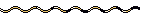
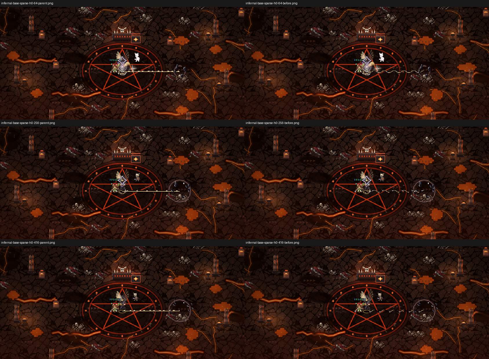
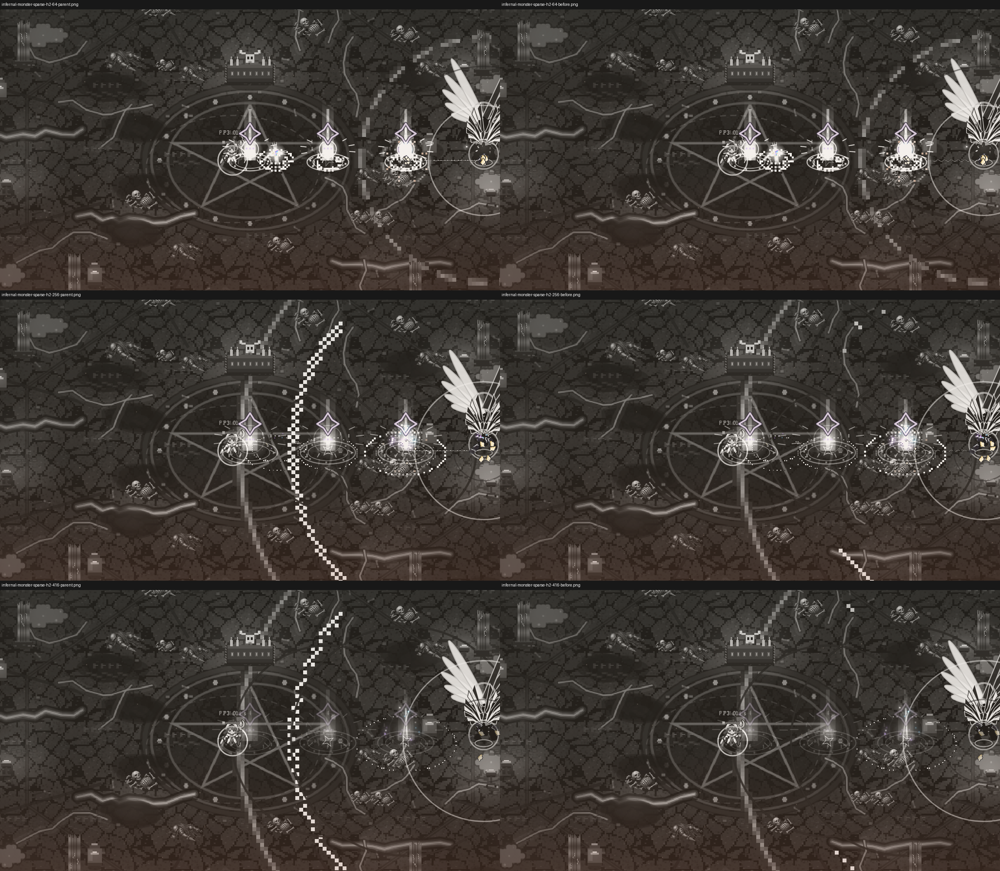

NanoGM · cierre02 · EN_CORRECCION
Evidencia nativa. No ArtPASS ni instalación de PNG.
ng_decree-atlas.png
ng_burst_d-atlas.png ng_verdict-atlas.pngng_law-atlas.png
ng_verdict-atlas.pngng_law-atlas.png review-pair-temporal-mobile-h0.webp
review-pair-temporal-mobile-h0.webp
review-pair-evolved-desktop-h2.webp